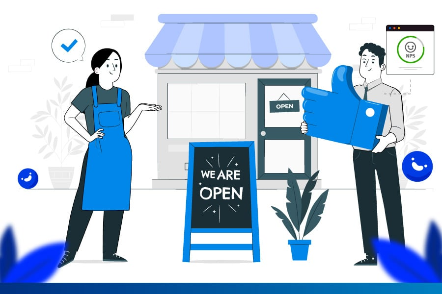

Los servicios son un conjunto de actividades económicas destinadas a satisfacer las necesidades de los consumidores y de otros actores económicos. En ese aspecto, son similares a los bienes, pero se distinguen de ellos en que no son tangibles ni contables, sino actividades o procesos de distinta naturaleza.
Dicho de una manera más sencilla, es cómo medimos lo feliz o satisfecho que nos hace elegir ciertos productos o servicios. Esencialmente, es lo mucho que valoramos y nos beneficia usar o disfrutar de algo en particular. Piénsalo así: si algo te gusta mucho y te hace muy feliz usarlo, entonces tiene mucha utilidad para ti. Esto significa que probablemente querrás más de eso. Seguirás aumentando su cantidad hasta que sientas que ya tienes suficiente, alcanzando lo que llamamos un punto de saciedad.
Los clientes son el motor principal de todo negocio, pero hay una sutil diferencia entre términos: un cliente se define como la persona que le compra habitualmente a una misma empresa, un usuario es en cambio la persona que disfruta y emplea habitualmente un producto o servicio, así mismo, un consumidor no es necesariamente un cliente. Te mostramos cómo cambia la experiencia de clientes y de usuarios en relación con los productos y servicios que ofrecen.
Ser un patrocinador (o sponsor) significa apoyar o financiar un proyecto, evento o persona a cambio de obtener algún tipo de beneficio, ya sea visibilidad de marca, posicionamiento o cumplimiento de objetivos. El término tiene significados muy distintos dependiendo del contexto en el que se utilice.